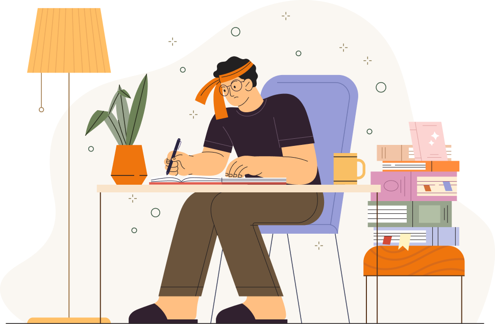

Чувства: тревога, усталость и небольшое напряжение в плечах.
Мысли: дедлайны по текущему проекту, постоянно проверяю мессенджер.
Себе: «Хватит спешить. Я делаю достаточно и могу позволить себе немного тишины.»
Сделайте паузу и уделите себе несколько минут внимания

Чувства: тревога, усталость и небольшое напряжение в плечах.
Мысли: дедлайны по текущему проекту, постоянно проверяю мессенджер.
Себе: «Хватит спешить. Я делаю достаточно и могу позволить себе немного тишины.»
5 дней подряд
24 сессии